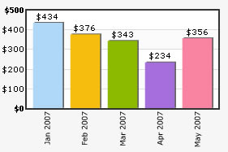
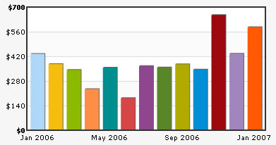
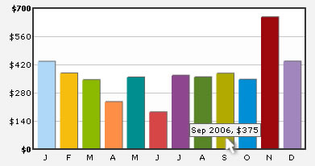

Handling long x-axis names |
Often, in your chart data, you might have long x-axis names (category names). Fitting them on a small chart space becomes a little cumbersome, as they make the chart look too cluttered. FusionCharts offers a myriad of options to help you gain control over long/too many x-axis names. Here, we've explained a few such methods including:
FusionCharts v3 offers lot more options for handling long x-axis labels- like Wrap mode, slant mode, stagger mode, skip mode etc. Let's see each of them one by one. |
| Rotating Names |
You can opt to rotate the x-axis labels by using <graph rotateNames='1' ..>. This method wouldn't work if you've non-english characters in your x-axis labels as FusionCharts uses embedded fonts to render rotated names. Consider the XML below: |
| <graph numberPrefix='$' rotateNames='1'> <set name='Jan 2006' value='434' /> <set name='Feb 2006' value='376' /> <set name='Mar 2006' value='343' /> <set name='Apr 2006' value='234' /> <set name='May 2006' value='356' /> </graph> |
| It yields the following chart: |
|  |
| Showing every n-th label |
| If your x-axis labels represent a continuous quantity like time, date etc. which are incremental in nature, you can opt to show every n-th label instead of all the labels. This enhances the clarity of the chart. Consider the XML below: |
| <graph numberPrefix='$' showValues='0'> <set name='Jan 2006' value='434' /> <set name='Feb 2006' value='376' showName='0' /> <set name='Mar 2006' value='343' showName='0' /> <set name='Apr 2006' value='234' showName='0' /> <set name='May 2006' value='356' /> <set name='Jun 2006' value='183' showName='0' /> <set name='Jul 2006' value='365' showName='0' /> <set name='Aug 2006' value='357' showName='0' /> <set name='Sep 2006' value='375' /> <set name='Oct 2006' value='345' showName='0' /> <set name='Nov 2006' value='655' showName='0' /> <set name='Dec 2006' value='435' showName='0' /> <set name='Jan 2007' value='586' /> </graph> |
In the above chart, we're plotting consecutive months on the chart. So, if we show all the months, the chart gets cluttered. To avoid this, we've set labelStep as 4, so that every 4th x-axis label is only shown. When you view the chart, you'll get following output: |
|  |
| Displaying short label on axis and showing full name as tool tip |
| If you're working on a small chart size, you can also opt to show abbreviated names on x-axis, but show full names as tool tip. Consider the XML below: |
| <graph numberPrefix='$' showValues='0' decimalPrecision='0' bgcolor='F3f3f3' divlinecolor='c5c5c5' showAlternateHGridColor='1' alternateHGridColor='f8f8f8' > <set name='J' hoverText='Jan 2006' value='434' color='AFD8F8' /> <set name='F' hoverText='Feb 2006' value='376' color='F6BD0F' /> <set name='M' hoverText='Mar 2006' value='343' color='8BBA00' /> <set name='A' hoverText='Apr 2006' value='234' color='FF8E46' /> <set name='M' hoverText='May 2006' value='356' color='008E8E' /> <set name='J' hoverText='Jun 2006' value='183' color='D64646' /> <set name='J' hoverText='Jul 2006' value='365' color='8E468E' /> <set name='A' hoverText='Aug 2006' value='357' color='588526' /> <set name='S' hoverText='Sep 2006' value='375' color='B3AA00' /> <set name='O' hoverText='Oct 2006' value='345' color='008ED6' /> <set name='N' hoverText='Nov 2006' value='655' color='9D080D' /> <set name='D' hoverText='Dec 2006' value='435' color='A186BE' /> </graph> |
| In the above XML, we're showing only the first character of each month name on x-axis. The rest of information is shown as tool tip as below: |
|  |
| In this section, we've just given you a brief idea of your control over x-axis. You can mix and match these ideas to effectively get a much better control over the x-axis. |